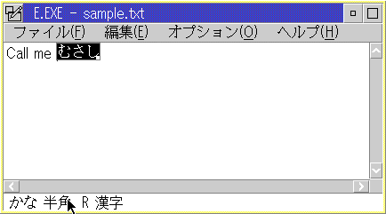
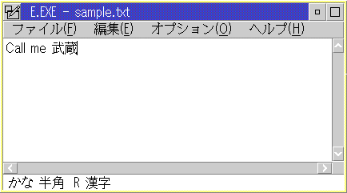

param1
- pCursorPos (PRECTL)
- If the conversion is not allowed, do not modify the
parameter.
- If the on-the-spot conversion is to be performed,
update xLeft and yBottom of pCursorPos with the bottom-left corner of the
text cursor position in window coordinate.
- If the fixed-position conversion is to be performed, update both xLeft and yBottom of pCursorPos with -1.
- Return QCP_CONVERT if the conversion is allowed.
- Return QCP_NOCONVERT if the conversion is not allowed.
- reserved.
- usCode
(USHORT)
The default window procedure will assume the fixed-position conversion. The pre-defined window controls handle this message according to their characteristics. For instance, the Frame Control window procedure returns QCP_NOCONVERT. On the contrary, the Entry Field Control window procedure provides the on-the-spot conversion as default. Refer to "OS/2 Technical Library Presentation Manager Programming Reference vol.3" for the detail of the behavior of each control.
On-The-Spot conversion (Intermediate result) shows how the On-the-spot conversion is performed on a PM screen. A user inputs a word using its pronunciation into a small window opened at the current cursor position, window of which back ground color is black. An intermediate result of DBCS conversion is displayed at the small window each time the user pushes the conversion key.
Fixed-Position conversion (Intermediate result) shows the Fixed-Position conversion. See the intermediate result is shown at the bottom of the window, where we called the status line.
On both conversions, DBCS characters are put into the application window
after the user pushes the enter key (Conversion result). On - The - Spotconversion(
Intermediateresult )

Fixed-Position conversion (Intermediate result)

Conversion result

Allowing on-the-spot conversion (source: MISCEDIT.C) is a source code example
how the WM_QUERYCONVERTPOS message is to be treated.
Allowing on-the-spot conversion (source: MISCEDIT.C)